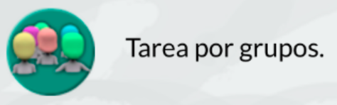

Vamos al taller
- Duración:
- 2 sesiones
- Agrupamiento:
- Grupos de 3 o 4 alumnos/as

Es hora de implementar nuestro circuito en el proyecto. Prepara los materiales necesarios y sigue el diseño colocando los cables paso a paso y comprueba luego el resultado.
Si lo has conseguido, genial!
Si no lo lograste pide ayuda a compañeros/as o a tu profe.
Una vez terminado el reto, recuerda completar la ficha de Aprendizaje correspondiente.